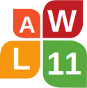

|  |
The 11th Linguistic Annotation Workshop April 4th, 2017, Valencia, Spain |
| Adam Meyers | (New York University) |
| Ines Rehbein | (Potsdam University) |
| Heike Zinsmeister | (University of Hamburg) |
| Stefanie Dipper | (Ruhr University Bochum) |
| Chu-Ren Huang | (The Hong Kong Polytechnic University) |
| Nancy Ide | (Vassar College) |
| Lori Levin | (Carnegie-Mellon University) |
| Antonio Pareja-Lora | (SIC & ILSA, UCM / ATLAS, UNED) |
| Massimo Poesio | (University of Trento) |
| Sameer Pradhan | (Harvard University) |
| Manfred Stede | (University of Potsdam) |
| Katrin Tomanek | (VigLink Inc.) |
| Fei Xia | (University of Washington) |
| Nianwen Xue | (Brandeis University) |
| Collin Baker | (UC Berkeley) |
| Ann Bies | (LDC) |
| Archna Bhatia | (Carnegie Mellon University) |
| Marie Candito | (Université Paris Diderot - INRIA) |
| Özlem Çetinoğlu | (University of Stuttgart) |
| Christian Chiarcos | (University of Frankfurt) |
| Markus Dickinson | (Indiana University) |
| Stefanie Dipper | (Ruhr University Bochum) |
| Tomaž Erjavec | (Josef Stefan Institute) |
| Kilian Evang | (University of Groningen) |
| Pablo Faria | (Universidade Estadual de Campinas) |
| Jennifer Foster | (Dublin City University) |
| Andrew Gargett | (University of Birmingham) |
| Kim Gerdes | (Sorbonne Nouvelle, Paris 3) |
| Nizar Habash | (New York University Abu Dhabi) |
| Udo Hahn | (University of Jena) |
| Chu-Ren Huang | (The Hong Kong Polytechnic University) |
| Nancy Ide | (Vassar College) |
| Aravind Joshi | (University of Pennsylvania) |
| Varada Kolhatkar | (University of Toronto) |
| Valia Kordoni | (Humboldt University Berlin) |
| Sandra Kübler | (Indiana University) |
| John S. Y. Lee | (City University of Hong Kong) |
| Els Lefever | (University College Ghent) |
| Lori Levin | (Carnegie-Mellon University) |
| Amália Mendes | (Universidade di Lisboa) |
| Anna Nedoluzhko | (Chareles University Prague) |
| Kemal Oflazer | (Carnegie-Mellon University, Qatar) |
| Lilja Øvrelid | (University of Oslo) |
| Alexis Palmer | (University of Stuttgart) |
| Antonio Pareja-Lora | (SIC & ILSA, UCM / ATLAS, UNED) |
| Massimo Poesio | (University of Trento) |
| Sameer Pradhan | (Harvard University) |
| James Pustejovsky | (Brandeis University) |
| Arndt Riester | (University of Stuttgart) |
| Benoît Sagot | (Inria, Université Paris 7) |
| Nathan Schneider | (Carnegie-Mellon University) |
| Djamé Seddah | (Université Paris Sorbonne & INRIA's Alpage Project) |
| Kiril Simov | (Bulgarian Academy of Sciences, Sofia) |
| Anders Søgaard | (University of Copenhagen) |
| Caroline Sporleder | (University of Trier) |
| Manfred Stede | (University of Potsdam) |
| Joel Tetrault | (Yahoo! Labs) |
| Katrin Tomanek | (VigLink Inc.) |
| Reut Tsarfaty | (Weizmann Institute of Science, Israel) |
| Yulia Tsvetkov | (Carnegie-Mellon University) |
| Andreas Witt | (IDS Mannheim) |
| Fei Xia | (University of Washington) |
| Nianwen Xue | (Brandeis University) |